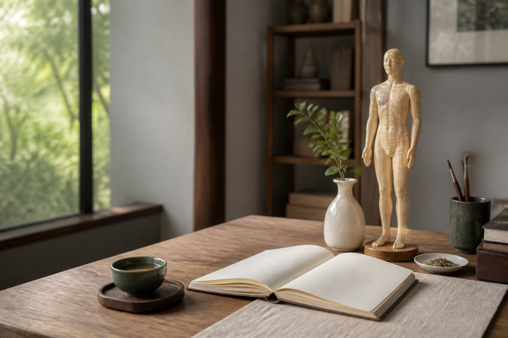
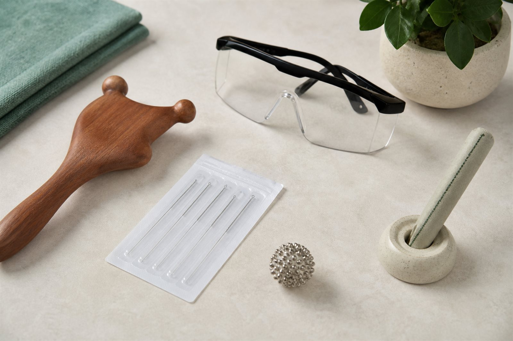
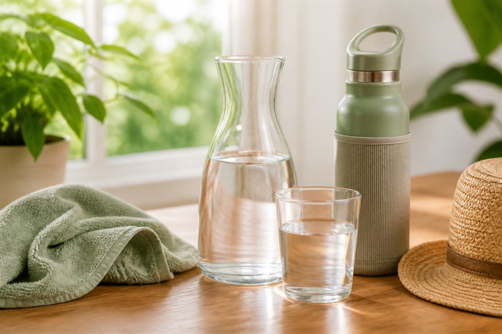
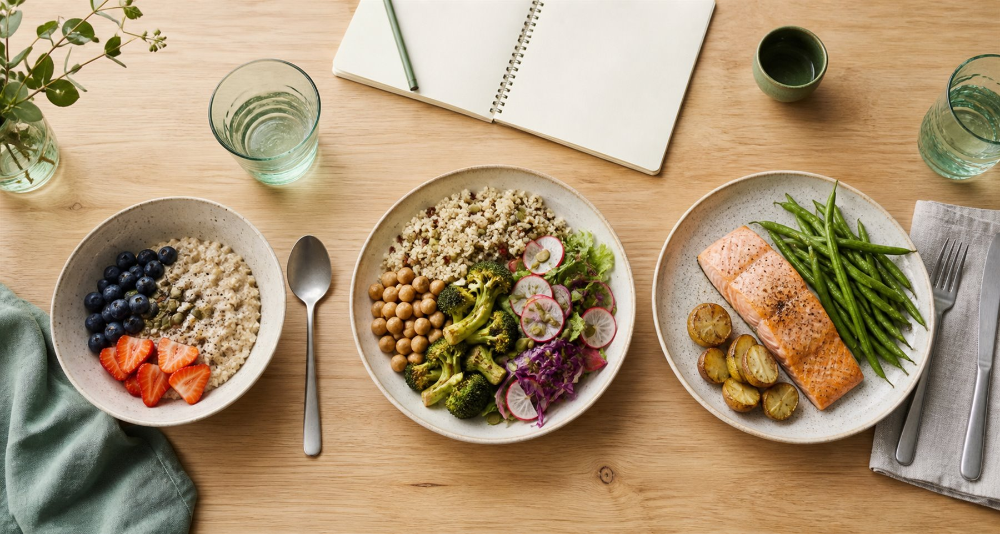
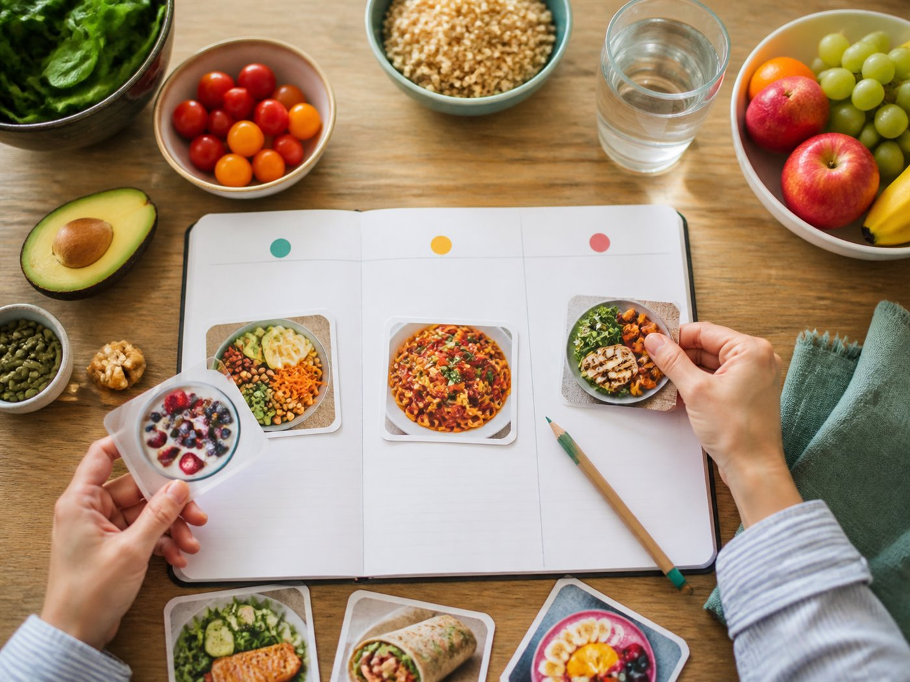
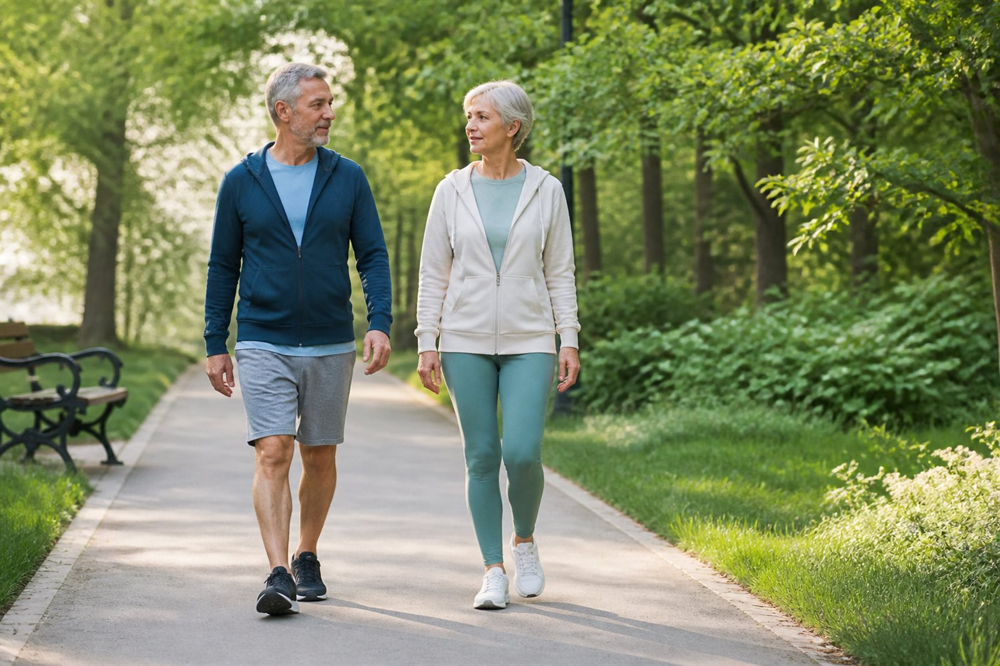

Сочетайте, а не заменяйте
Используйте ТКМ как дополнение к медицинской помощи. Не откладывайте визит к врачу и не отменяйте назначенное лечение.
Материалы без сложных слов
Здесь собраны короткие и понятные ориентиры о ТКМ, воде, питании и движении. Используйте их как дополнение к диагностике и лечению, а не вместо них.
Сначала — понимание
ТКМ включает иглоукалывание, массаж точек, тайцзи, цигун, травы и рекомендации по питанию. Эти методы отличаются по пользе, ограничениям и рискам — поэтому важно выбирать их осознанно.

Используйте ТКМ как дополнение к медицинской помощи. Не откладывайте визит к врачу и не отменяйте назначенное лечение.
Список точек нужно проверить с учётом жалоб, противопоказаний и индивидуальной реакции.
Иглоукалывание и другие процедуры с повреждением кожи требуют квалификации и строгой стерильности.
Источник: NCCIH — Traditional Chinese Medicine.
Практика
Метод, интенсивность и продолжительность процедуры подбираются индивидуально — с учётом цели воздействия, возраста, чувствительности и общего состояния человека.

Акупрессура — воздействие на активную точку пальцем или специальным массажным инструментом.
Тонизирующий способ: сравнительно короткие ритмичные нажатия сериями с небольшими перерывами. Давление должно быть ощутимым, но не вызывать резкой боли.
Седативный способ: плавное, медленное и продолжительное нажатие. Интенсивность увеличивают и ослабляют постепенно; возможны мягкие круговые движения без резкого отрыва пальца.
Сила и длительность воздействия индивидуальны. Особенно осторожный подход необходим для детей, пожилых людей и при повышенной чувствительности.
Воздействие на выбранные точки слабым электрическим током выполняется через специальный прибор.
В описанном в исходном материале «детском режиме» используется положительная полярность и воздействие до одной минуты на точку. Точные параметры определяет врач с учётом прибора, возраста и реакции человека.
Процедура не должна сопровождаться болью, жжением или выраженным дискомфортом. Кардиостимулятор или другое имплантированное электронное устройство, беременность, эпилепсия, сердечные заболевания, нарушение чувствительности и повреждение кожи требуют предварительной профессиональной оценки.
Небольшие стальные шарики, семена гречки, проса и других растений закрепляют пластырем над выбранной точкой. Для дополнительной стимуляции на аппликатор можно периодически мягко надавливать.
В традиционных методиках для седативного воздействия применяют медные пластины. Продолжительность ношения определяет врач; в исходном материале указан диапазон от 3 до 10 дней.
Кожа должна быть чистой и неповреждённой. При покраснении, зуде, жжении, боли или другой выраженной реакции пластырь и аппликатор снимают.
Лазеропунктура — бесконтактная стимуляция активных точек низкоинтенсивным лазерным излучением без повреждения кожи.
Мощность, длина волны и продолжительность зависят от оборудования и задачи. Процедуру проводит врач; пациент и врач используют защитные очки, соответствующие типу прибора. Направлять излучение в глаза запрещено.
Фоточувствительность, заболевания кожи и приём фотосенсибилизирующих препаратов необходимо обсудить с врачом до процедуры.
Моксотерапия — бесконтактное прогревание точки теплом тлеющей полыни. Сигару держат на безопасном расстоянии и плавно перемещают круговыми или возвратно-поступательными движениями. Она не должна касаться кожи.
Допустимо ощущение приятного постепенно нарастающего тепла — без жжения и боли. Процедуру прекращают при жжении, боли, головокружении, ухудшении самочувствия или выраженном покраснении.
Нужны хорошее проветривание, контроль подготовленного врача и полное гашение сигары в негорючей ёмкости. Повреждённая кожа, высокая температура, острое воспаление, сниженная чувствительность, заболевания дыхательных путей, беременность и аллергия на полынь или дым требуют отказа от самостоятельной процедуры и консультации врача.
Полынные сигары и другие аппликаторы продаются в специализированных магазинах и на маркетплейсах. Перед покупкой проверьте состав, сведения о производителе и инструкцию. Самостоятельное изготовление средств для прогревания без знания технологии и правил пожарной безопасности не рекомендуется.
Ежедневная основа
Потребность в жидкости индивидуальна: она зависит от температуры, нагрузки, питания, лекарств и состояния здоровья. Универсальная норма в литрах подходит не всем.

Ориентируйтесь на регулярность: держите воду доступной и пейте в течение дня, особенно в жару и при нагрузке.
Учитывайте все источники: жидкость поступает не только с водой, но и с напитками и продуктами.
Не заставляйте себя пить чрезмерно: избыток воды также может быть опасен.
Согласуйте режим с врачом: особенно при заболеваниях сердца, почек, отёках или приёме мочегонных препаратов.
Личный выбор автора
Я долго сравнивал фильтры, изучал характеристики и состав воды. В результате остановился на модели, которая лучше всего соответствует важным для меня критериям.
Это мой личный выбор, а не универсальная рекомендация: подходящая система очистки зависит от состава исходной воды, состояния водопровода и задач конкретной семьи. Перед покупкой полезно изучить характеристики, сертификаты, стоимость сменных элементов и результаты анализа воды.
Посмотреть выбранный фильтрСсылка ведёт на сайт продавца. Цена, комплектация и условия доставки могут изменяться.Система Татьяны Малаховой
«Будь стройной!» предлагает не короткую диету, а понятный порядок питания: заранее продумывать меню, замечать насыщение и постепенно менять привычки. Это авторский подход, а не лечебная схема и не обещание результата.
Не нужно менять всё за один день. Начните с нескольких понятных шагов и наблюдайте, как новый режим вписывается в вашу жизнь. Первые два–три месяца можно посвятить спокойной адаптации: слушать самочувствие, замечать насыщение и выбирать привычки, которые хочется сохранить надолго.

Планируйте основные приёмы пищи, ешьте без спешки и чаще выбирайте продукты с минимальной обработкой.
Рацион должен оставаться разнообразным и давать достаточно энергии и питательных веществ.
При диабете, заболеваниях ЖКТ или почек, беременности и расстройствах пищевого поведения обсудите рацион с врачом или диетологом.
Попробуйте на практике
Выберите один из 30 примеров, а затем замените крупу, рис, макаронные изделия, овощи, белковую часть, авокадо или другое дополнение. Итог дня и предупреждения о высоком ГИ обновятся автоматически.

Расширенный каталог
Это не закрытый список «разрешено/запрещено»: в авторской системе выбор шире и зависит от сочетания, количества и цели. Здесь собраны практичные группы для конструктора.
Это ориентир для планирования, а не расчёт калорий или лечебной диеты. Калькулятор не учитывает аллергии, лекарства и заболевания; индивидуальные ограничения согласуйте с врачом или диетологом.
Другой продукт · приложение ТКМ для Windows
Познакомьтесь с полной версией, сравните возможности и начните с бесплатной демо-версии на 7 дней.
Авторское описание: официальный сайт Татьяны Малаховой.
Базовые ориентиры: ВОЗ — здоровое питание.
Физическая нагрузка 50+
После 50 лет особенно важно сохранять регулярную физическую активность. Баня, прогревание и массаж могут давать ощущение расслабления, но не заменяют самостоятельную работу мышц, сердца и лёгких.

Ориентир ВОЗ для взрослых — 150–300 минут умеренной активности: ходьба, велосипед, плавание или танцы.
Нагрузка на основные группы мышц с контролируемой техникой и восстановлением.
После 65 лет упражнения на равновесие особенно важны; при риске падений их выполняют с безопасной опорой.
Подойдут ходьба, плавание, велосипед, приседания с опорой, отжимания от стены или высокой поверхности и упражнения с подходящими по весу гантелями. Нагрузка должна быть ощутимой, но контролируемой: умеренная усталость допустима, а тренироваться через боль, головокружение, резкую одышку или выраженную слабость нельзя. Три занятия в неделю могут стать удобной основой режима, но частота и интенсивность зависят от подготовки и состояния здоровья.
Источник: ВОЗ — рекомендации по физической активности.